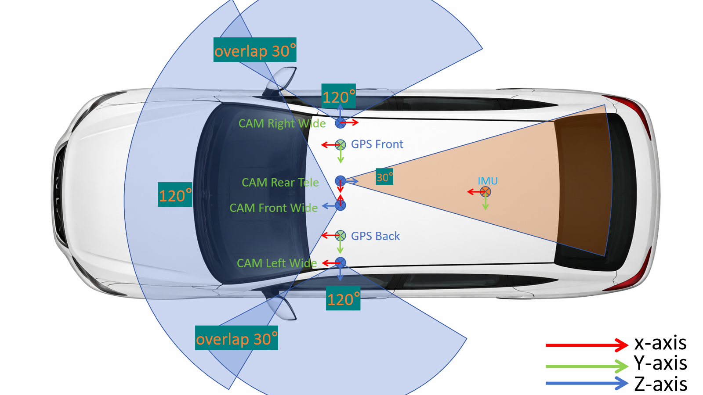

Image Data
Synchronized multi-view images from four cameras for perception and scene understanding.
Production Autonomous Vehicle Evaluation
A real-world end-to-end dataset designed for system-level evaluation of driving safety and reliability beyond perception-only benchmarks.
The current release provides a selected academic subset collected under identified autonomous driving mode with synchronized sensors and high-precision localization.
Overview
Existing datasets such as KITTI, nuScenes, Waymo, Argoverse, nuPlan, and Zenseact Open Dataset (ZOD) mainly support perception tasks, while most are collected from manually driven vehicles.
PAVE is designed to close that gap with real-world logs captured under autonomous driving mode, enabling holistic evaluation of intelligent driving behavior, safety events, and trajectory quality.
Comparison
This table compares representative autonomous driving datasets across perception, motion, and end-to-end categories. Notably, PAVE uniquely provides explicitly labeled autonomous driving mode data, enabling direct analysis of real-world AV behavior.
| Category | Dataset | General | Perception | Trajectory | Tasks | ||||||||||
|---|---|---|---|---|---|---|---|---|---|---|---|---|---|---|---|
| Year | Scenes | Size (h) | Veh. models | Driving mode | Locations | Avg. speed | RGB imgs | Ann. frames | Cams | Accuracy | Attitude | Ann. scenarios | Tasks | ||
| Perception | KITTI | 2012 | 22 | 1.5 | 1 | Human | Karlsruhe | 9.7 | 15k | 15k | 4 | 0.02 m | Yes | No | Det.&Track. |
| ZOD (Frame) | 2023 | – | – | – | H + A (unlabeled) | 14x Europe | – | 100k | 100k | 1 | 0.01 m | Yes | No | Det., Seg. | |
| Waymo Perception | 2019 | 1k | 5.5 | 2 | H + A (unlabeled) | 3x USA | 9.76 | 1M | 200k | 5 | – | – | No | Det.&Track. | |
| Motion | Waymo Motion | 2021 | 100k | 570 | 2 | H + A (unlabeled) | 6x USA | 8.3 | N/A | N/A | N/A | – | – | No | Motion Pred. |
| OpenPAV | 2024 | – | – | Multi | H + A (unlabeled) | Multi-source | 3.2-32.2 | N/A | N/A | N/A | 0.01 - 0.1 m | – | No | Motion Pred. | |
| End-to-End | nuScenes | 2019 | 1k | 5.5 | 2 | H + A (unlabeled) | Boston, SG | 5.1 | 1.4M | 40k | 6 | ≤ 0.1 m | Yes | No | Det.&Track. |
| ZOD (Sequences) | 2023 | 1473 | ~8 | – | H + A (unlabeled) | 14x Europe | – | 294k | 1473 | 1 | 0.01 m | Yes | No | Det., Seg. | |
| Waymo E2E | 2025 | 4021 | ~12 | 2 | H + A (unlabeled) | USA | 5.8 | ~5.5M | – | 8 | – | – | No | Motion Plan. | |
| PAVE | 2025 | 32727 | 140 | 5 | H + A (labeled) | 7 major cities in China and USA | 9.9 | 130k | 130k | 4 | 0.008 m | Yes | Yes | Det., Eval. Motion Plan. | |
What's Included
Synchronized multi-view images from four cameras for perception and scene understanding.
High-precision vehicle trajectories for motion analysis and planning evaluation.
Continuous multi-camera video recordings are available internally but are not included in the public release.
Rich scenario-level annotations including road type, traffic conditions, lighting, and environmental attributes.
Scenario Diversity
The PAVE dataset provides diverse real-world driving scenarios together with structured scenario-level annotations to support systematic condition-aware analysis, subset construction, and reproducible benchmark evaluation.

Scenario Annotation
Allowed values [highway, urban, residential, rural, parking, other]
Allowed values [day, dusk, dawn, night, night_lit, night_unlit, other]
Allowed values [clear, cloudy, rain, snow, fog, other]
Allowed values [paved, unpaved, other]
Allowed values [stop, follow, cruise, lane_change, turn, other]
Highlights
The current release is organized to support non-commercial research, method development, and scientific publication around autonomous vehicle evaluation.
Real-world driving logs collected with autonomous driving engaged rather than purely manual operation.
Supports safety and reliability analysis beyond isolated perception metrics.
Designed for AV behavior understanding, trajectory evaluation, and benchmark construction.
Synchronized sensor streams and localization records make temporal alignment a first-class capability.
Faces and license plates are anonymized in accordance with privacy and compliance requirements.
Suitable for academic evaluation, reproducible experiments, and future devkit expansion.
Platform Installation
This video demonstrates the installation process of the camera and GNSS platform, together with the supporting on-vehicle data collection setup used for real-world autonomous-driving data acquisition in PAVE.
Installation Demonstration
The recording presents how the sensing platform is mounted and integrated on the test vehicle before data collection, providing a practical view of the hardware arrangement behind the released dataset.
Sensor Setup
According to the paper, PAVE is built on a fixed multi-sensor platform with four high-resolution RGB cameras and a high-precision GNSS/IMU unit, enabling synchronized perception and trajectory capture in real autonomous-driving operation.
Front-wide (120°), front-tele (30°), left-wide (120°), and right-wide (120°).
All cameras follow the same high-resolution recording setup.
GNSS is further enhanced by RTK differential correction via CORS.
Paper-reported localization accuracy for trajectory alignment.
The forward-view setup combines a front-wide camera for broad scene coverage and a front-telephoto camera for longer-range observation.
120° front-wide FOV, 30° front-telephoto FOV, and 2592 x 1944 capture at 30 FPS.
Left and right side cameras expand lateral coverage so the dataset can better capture surrounding traffic and road context.
Both side-wide cameras use 120° FOV and record at 2592 x 1944 resolution and 30 FPS.
The localization stack fuses GNSS and IMU measurements, while RTK differential correction through the CORS network improves position accuracy.
The paper reports 20 Hz GNSS, 200 Hz IMU, and approximately 0.8 cm localization accuracy.
GNSS time acts as the global temporal reference so that video streams and trajectory states stay aligned across the whole system.
Logged states include latitude, longitude, altitude, velocity, heading, roll, pitch, and yaw.

Access
This repository currently releases a selected academic subset for non-commercial research, method development, and scientific publication.
Download the currently released academic subset and explore the repository documentation.
The release is governed by the PAVE Academic Non-Commercial License v1.0.
For full-dataset access, commercial licenses, industrial evaluation services, or extended annotations and benchmarks:
kema@hkust-gz.edu.cnCitation
Citation is a formal requirement for any research output that uses this dataset, even partially.
@article{Li2025PAVE,
title = {PAVE: An End-to-End Dataset for Production Autonomous Vehicle Evaluation},
author = {Xiangyu Li and Chen Wang and Yumao Liu and Dengbo He and Jiahao Zhang and Ke Ma},
journal = {arXiv preprint arXiv:2511.14185},
year = {2025}
}Contact
Please reach out for full dataset access, licensing clarification, extended benchmarks, or industry collaboration around autonomous vehicle evaluation.